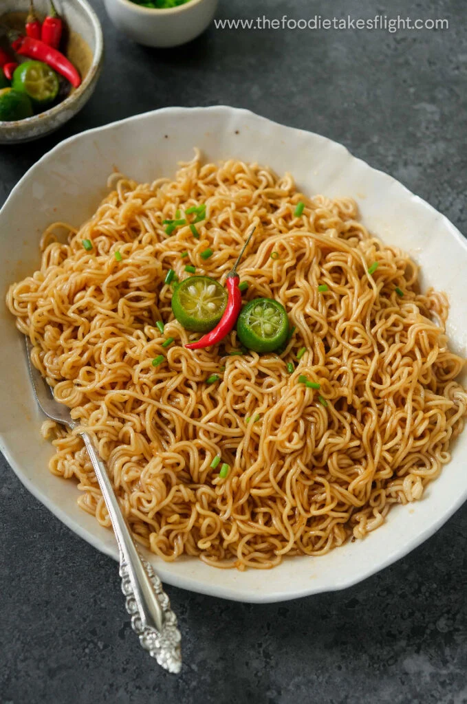

Buldak

Description
Pancit Canton is a classic Filipino stir-fried noodle dish made with pre-fried wheat flour stick noodles (called lo mein or canton noodles), an assortment of sliced meats or seafood, and crisp, colorful vegetables. Rooted in Chinese-Filipino culinary traditions, it is heavily layered with savory, sweet, and umami profiles. It is traditionally served during birthdays and special celebrations because the long noodles symbolize long life and good health, but it is also a staple comfort food for everyday family meals.
Ingredients
Noodles & Base: 250g dried pancit canton (flour stick) noodles, 2 tbsp cooking oil, 1 medium onion (sliced), 4 cloves garlic (minced).
Proteins: 150g pork shoulder (thinly sliced), 1 Chinese sausage (sliced into rounds), 8-10 pieces raw shrimp (peeled and deveined), 1/4 cup chicken liver or squid balls (optional).
100g Rice cakes (Tteokbokki), optional but highly recommended
Vegetables: 1 small carrot (julienned), 10 pieces snap peas or snow peas, 1 cup green beans (sliced), 1 small cabbage (chopped).
Sauce & Liquid: 1 ½ cups chicken stock, ¾ cup water, 3 tbsp soy sauce, 1 tbsp oyster sauce, salt and black pepper to taste.
To Serve: Fresh calamansi wedges (or lemon) for squeezing over the top.
Steps
Sauté the Aromatics and ProteinsHeat a large wok or deep frying pan over medium-high heat and pour in the cooking oil. Sauté the garlic and onions until fragrant and the onions are translucent. Add the pork and Chinese sausage, cooking for about 3 to 5 minutes until the pork is lightly browned.
Flash-Fry and Remove the VegetablesAdd the hard vegetables (carrots, green beans, snap peas) to the wok first, followed by the cabbage. Stir-fry for 2 to 3 minutes until they are half-cooked but still crisp. Season with a pinch of salt and pepper. Pro Tip: Remove the vegetables using a slotted spoon and transfer them to a plate. This prevents them from becoming mushy while the noodles cook.
Simmer the Liquid BaseIn the same wok containing the meat juices, pour in the chicken stock, water, soy sauce, and oyster sauce. Bring the liquid to a rolling boil. Drop in the raw shrimp and cook for 2 to 3 minutes until pink, then quickly remove them and set aside with the vegetables. Taste the broth and adjust the seasoning with salt or pepper if necessary.
Cook and Soften the NoodlesLower the heat slightly and add the dry pancit canton noodles directly into the boiling broth. Gently push the noodles down to submerge them. Allow them to simmer, folding them over occasionally, until they absorb nearly all of the liquid and soften up completely (about 5 to 7 minutes).
Toss Everything TogetherReturn the cooked vegetables, shrimp, and any extra meats back into the wok. Toss everything together vigorously for 1 to 2 minutes until fully combined and heated through. Turn off the heat.Transfer your Pancit Canton to a serving platter and serve immediately with fresh calamansi wedges on the side.